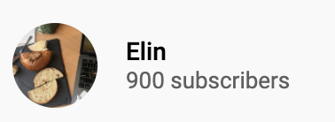
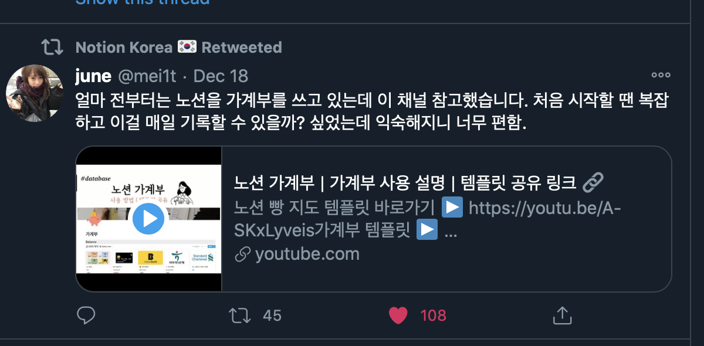
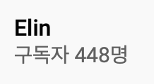
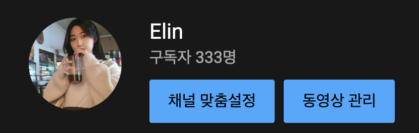
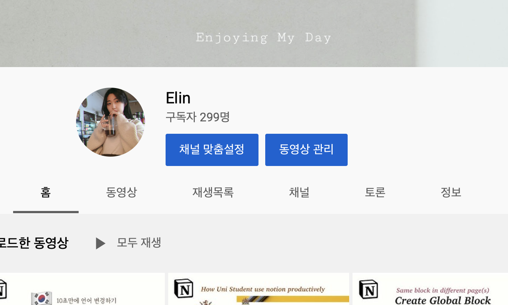

Notion, Daily life, Productivity, Management
My internship on 2020 brought me to run a youtube channel. One of the most important things I've learned while working as an intern is to apply and implement what I've learn asap. So when I first heard about Notion, I decided to use it as my workspace.
After first two weeks of using notion, I found it was very convenient work tool, as introduced in it's official website, notion was literally a all-in-one workspace compared to any other application or support tools I've ever tried before. Of course, this is just my opinion. And actually, I was attracted into its simple, minimal design. Like Apple! Another advantage was that I could easily find files&projects by categorizing them into categories.
I am a person who tends to focus and explore deeply on the topic I am interested. But at the same time, I lose interest quite fast too. Because I know myself, I thought that if I force myself a little bit, I would be able to make efficient use (and maybe this might lead to increase productivity) of Notion as my workspace.
The reason why I chose YouTube is because when I was exploring various Notion functions, I found that as more I know, I could make better use in Notion. And this made me want to share my experience with others. So more people can be more productive. Also, through youtube, I could evaluate my sincerity and usefulness of information of my contents by feedback from audience: 'date', 'views' and 'likes'.
So under my quote "Do what I think right away," I uploaded my first YouTube video on September 3!
17/1/2021
100 more in a week!

11/1/2021
My subscribers reached to 800. Though I wasn't able to upload additional contents during December because of finals + intern + preparation to return Hong Kong, around 400 people subscribed on my channel. I admit that I did not focus into my channel compared to when I first started because I needed to focus on my academic progress. It was final examination! Whoever reading this right now, please undersatand that CompEng exams are sooooo tough:(
But this increse was giving me motivation to continue working on more contents, as it was reflecting that what I share in web was useful to many people! So what I've done was to create a new notion template, a financial tracker 2021 version.
27/12/2020
Someone in twitter shared my financial tracker video, introducing that she found this useful! Thank you so much XD

20/12/2020
Since it is a final examination period, contents uploaded in December is less compared to November. However, despite the shortage of uploading, number of subscribers rose steadily by an average of 4-5 per day. Which I think this result is telling that the contents uploaded during the three months(September, October, and November) were useful videos for subscribers too.

30/11/2020

26/11/2020
Until now, total 40 videos are uploaded, and there are 299 subscribers.

9/11/2020
I tried appling SEO and self-promotion which I learnt during internship.